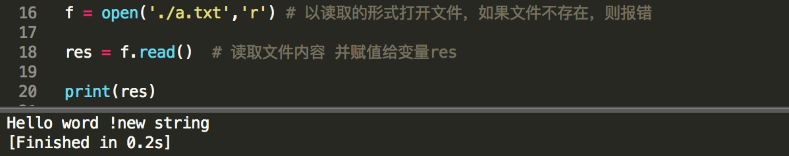

文件操作
文件操作主要讲解以下内容
- 文件本身的操作(python内置)
- 系统中文件和文件夹的操作（os和shutil模块当中）
- 系统路径相关操作(os模块中的子模块 os.path)
- 文件压缩和解压缩(zip，tar模块)
文件的基本操作
open()
功能：打开或者创建一个文件
格式：open('文件路径','打开模式')
返回值：文件io对象
打开模式一共N种：
- w模式 写模式write 文件不存在时会创建文件，如果文件已存在则会清空文件
- r模式 读模式read 文件不存在就报错，存在则准备读取文件
- a模式 追加模式 append 文件不存在则新建，文件存在则在文件末尾追加内容
- x模式 抑或模式 xor 文件存在则报错，文件 不存在则新建文件
- b模式 二进制模式 binary 辅助模式不能单独使用
- +模式 增强模式plus 也是辅助模式不能单独使用
以上模式可以互相组合：wrax不可以互相组合
w，w+，wb，wb+，r，r+，rb，rb+，a，a+，ab,ab+，x，x+，xb，xb+

read()
功能：读取文件
格式1：
文件io对象.read()
返回值：整个文件的字符
格式2：
文件io对象.read(字符长度)
返回值：指定长度的字符

write()
功能：写入文件
格式：文件io对象.write(字符串)
返回值：写入字符串的长度

close()
功能：关闭文件
格式：文件io对象.close()
返回值：None

读写函数
read()
功能：读取文件
格式1：
文件io对象.read()
返回值：整个文件的字符
格式2：
文件io对象.read(字符长度)
返回值：指定长度的字符
readline()
功能：读取一行文件
格式1：
文件io对象.readline()
返回值：一行内容的字符串
格式2：
文件io对象.readline（字符长度）
返回值：一行内容的字符串
注意：字符长度<当前行内内容，则读取指定长度的字符串，并且下次再读取还是在这个一行中获取没有读取的内容。
字符长度>=当前行内容，直接读取当前行
readlines()
功能：将文件中的内容读取到序列当中。
格式1：
文件io对象.readlines()
返回值：列表
格式2：
文件io对象.readlines(字符长度)
返回值：列表
注意：读取的行数由字符长度决定，如果字符长度读取了N行后，还有指定长度的字符没有读取，则直接读取下一行进来
write()
功能：写入文件
格式：文件io对象.write(字符串)
返回值：写入字符串的长度
writelines()
功能：将序列写入文件中
格式：文件io对象.writelines(序列)
返回值：None
truncate()
功能：字符串截取操作
格式：文件io对象.truncate(字节长度)
返回值：截取的字节长度
文件指针操作
tell()
功能：查看当前指针的位置
格式：文件io对象.tell()
返回值：整数
seek()
功能：调整指针的位置
格式1：
文件io对象.seek(N) 将指针直接调整到N的位置，从开头计算第N个位置
返回值：指针的位置
格式2：
文件io对象.seek(偏移位置，参考点方式)
返回值：指针的位置
参考点方式：
0 从文件的最开头计算偏移
1 从文件的当前指针位置开始计算偏移(实验不通)
2 从文件末尾开始计算偏移(实验不通)
什么是字符，字节，字符集
字符
一个文字就是一个字符，无论一个汉字 还是一个英文字或者数字都是一个字符
字节
存储单位，文字存储的单位需要使用字节。
1KB = 1024B
1MB = 1024KB
1GB = 1024MB
ITB = 1024GB
1PB = 1024TB
字符集
字符就是字符的编码类型。
ASCII码 美国专用
每种语言单独一种编码格式，为了使得计算机能够操作某种语言，中文(GB2313,GB10300,GBK,BIG5...) GBK格式中一个汉字需要2个字节表示，拼音和数字依然是一个字节
几乎所有语言都可以使用的字符集，utf类字符集，能够表示世界上绝大多数的文字。(utf-8) utf-8字符集表示汉字需要3个字节，表示拼音和数字还是1个字节